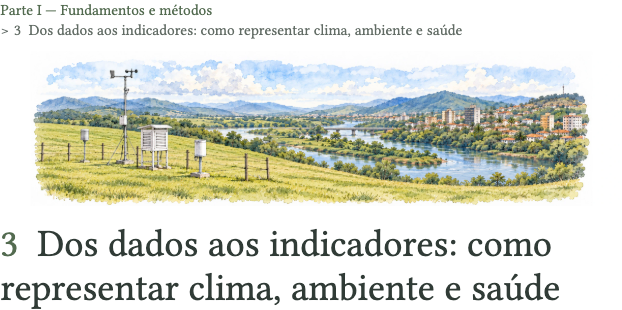
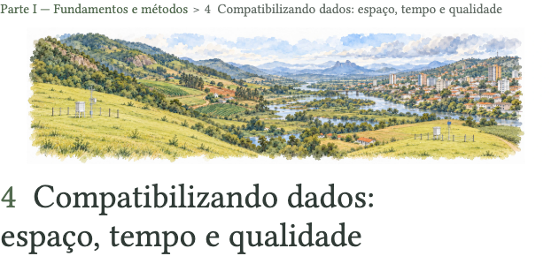
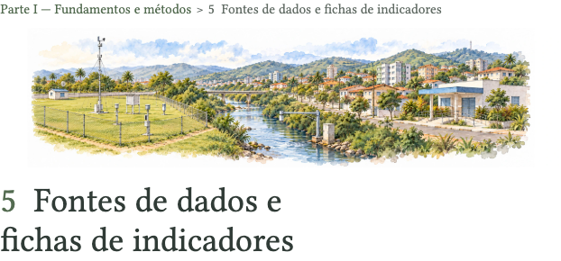

Capítulo 3  Abrir capítulo Prévia impressa · p. 67 Imagem Prompt inicial Refinamento Créditos
Capítulo 4  Abrir capítulo Prévia impressa · p. 97 Imagem Prompt inicial Refinamento Créditos
Capítulo 5  Abrir capítulo Prévia impressa · p. 131 Imagem Prompt inicial Refinamento Créditos